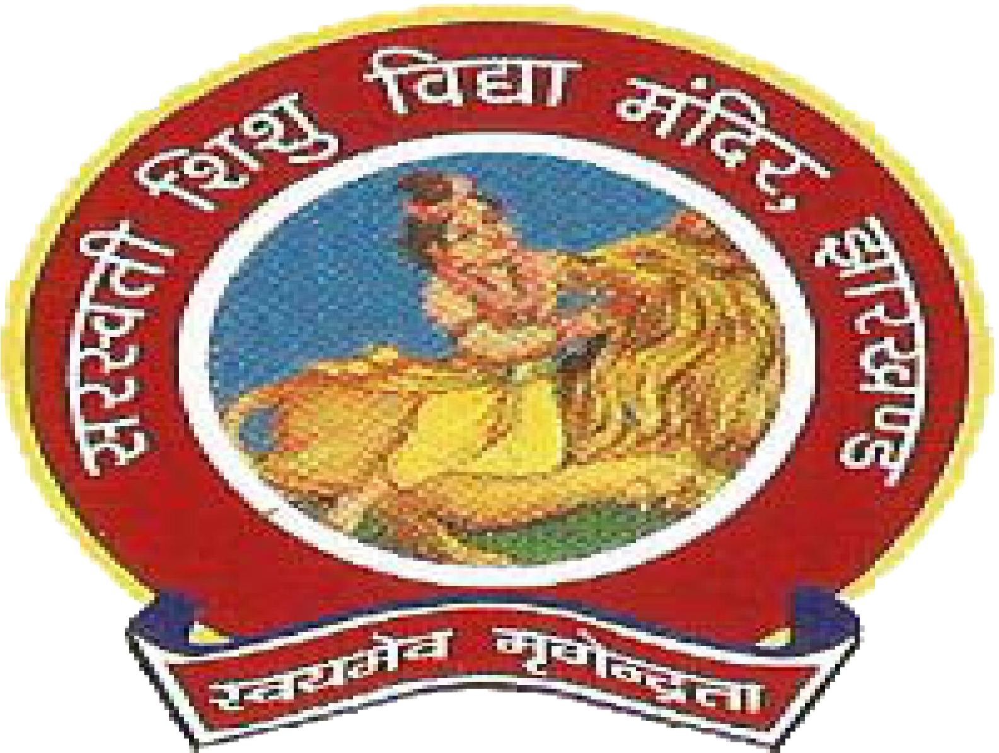

Brief Introduction
I'm an MCA final year student at the National Institute Of Technology, Jamshedpur. I'm skilled in Programming, DSA, SQL. I have done various projects using different tools, languages as I mentioned in my Projects section. I also have some basic knowledge about Web Scraping & Browser Automation, ML, Data Science.
July 27, 2017 - June 31, 2020
National Institute Of Technology, Jamshedpur

Master Of Computer Applications (MCA)
The National Institute of Technology Jamshedpur (NIT Jamshedpur), is an Institute of National Importance located at Jamshedpur, Jharkhand, India. Established as a Regional Institute of Technology on 15 August 1960, it was upgraded to National Institute of Technology(NIT) on 27 December 2002 with the status of a Deemed University. It is one of the 32 NITs in India, and as such is directly under the control of the Ministry of Human Resource Development (MHRD).
July 22, 2014 - May 31, 2017
Ranchi College Ranchi
Bachelor In Science (Information Technology)
Ranchi College, Ranchi (now upgraded as a Unitary State University and known as Dr. Shyama Prasad Mukherjee University, Ranchi) had been established during the Pre- Independent India. Established in 1926 as a Government College.
June 28, 2011 - April 31, 2014
St. Xavier's College Ranchi
Intermediate In Science (ISc.)
St. Xavier’s College, Ranchi is a Minority Educational Institution based on religion established and administered by the Ranchi Jesuit Province of the Society of Jesus. extablsihed on 1944 and affiliated to Ranchi University.
June 27, 2001 - April 31, 2011
Saraswati Vidya Mandir Sisai

Matriculation (Xth)
Ranjit Narayan Singh Saraswati Vidya Mandir Kudra Sisai Secondary School located at Sisai, Gumla affiliated to Jharkhand Academic Council (JAC)
Nov 2017 - Feb 2019
National Institute Of Technology, Jamshedpur
National Service Scheme (NSS)
Member of Public Relations(PR) Team in National Service Scheme, NIT JAMSHEDPUR.
Nov 2016
Ranchi College Ranchi
Regional University Cultural Fest
Member of Hospitality Team, Cultural Fest, Ranchi College Ranchi 2016.